本文是华与华全新超级案例先锋取暖器电视广告创意全过程，一个案例彻底讲透华与华“电视广告”的创意方法。
△本文共：4725字△阅读时长：约为5分钟△小编推荐：yoyoyo 今年取暖用先锋 全屋热透分分钟~今冬超火综艺节目《亲爱的客栈》，小伙伴们都看了吗？节目中的取暖神器大家有get到吧！

总纲：一个中心，四项基本原则
说到电视广告，很多业内人士都觉得，就是件创意的事。在华与华，也认为创意很重要，但一定要始终服务于提高销售的最终目的。这是华与华电视广告创意的中心思想，也是华与华所有创意行为的中心思想。

所以在华与华创作电视广告时，一定要学习广告片四项基本原则：（1）让人记住你叫什么名字。（2）让人记住你长什么样子。（3）让人行动，买！（4）建立品牌资产，为以后卖其他产品创建品牌平台。以四项基本原则为根，华与华创作了先锋取暖器电视广告片， 并于2017年10月上线湖南卫视，植入今冬爆款节目《亲爱的客栈》，先锋取暖器今年想要热透中国！那么，广告片到底怎样才能在众多纷繁复杂的广告洪流中脱颖而出呢？我们接着往下看。
满字诀：物尽其用，话要说满
为什么很多企业说，投不起广告？一条电视广告15秒，制作费用几十万上百万，贵不贵？贵，但和投放费用比起来，真不算什么。早在遥远的1997年，秦池酒拿下央视爸爸广告标王的金额就超过了3个亿。当时，一条广告片的投放费用，动辄上千万，上亿也不在话下。

20年后的今天，再牛逼的企业投了广告，都像过了双十一，要有一段吃土的时间。这么讲可能还不很具体，那请你先准备好纸笔，小编接下来带大家算一笔账。一条 15秒的电视广告， 1秒说 4个字， 15秒可以说 60个字。但是要说 60个字，太满了，喘不了气（原谅大多数人可能没有令人艳羡的中国好舌头）。所以一条15秒电视广告脚本，尽量控制在56个字。
• 按2000万的广告整体费用来算：20000000÷56=351742.857142857今天的金价是353元／克351742.857142857÷353=1011.736139214
生生上演了真实版的“一字千金”有木有！！！一个字写出来，足足两斤重的金子砸地上，你要是企业，你心疼不心疼？怎么着也得砸出个坑来，最好能火星四射，一炮而红！！！15秒56个字，一定一定一定要用完！如果用不完，就把口号或品名多重复两遍，一定不要浪费！浪费就是犯罪！浪费就是谋财害命！
传字诀：创造一句话，让消费者替我们传
传播的本质不是“传播”，是“播传”，要发动消费者替我们传。华与华董事长华杉说：为什么一定要“一句话”？因为口号的传播成本最低，比图像，比视频传播成本都低。传播的关键不在“播”，而在“传”，口号可以跨越时空不花一分钱的“传”。在《荷马史诗》里，这叫“有翼飞翔的话语”。在华与华，我们叫“超级口号”。先锋取暖器广告片创意的开端，我们选择了说唱作为配音表现形式。如果要问2017年最火的综艺节目，那一定是《中国有嘻哈》。短短1个月时间，说唱这种原本小众的音乐形式，席卷了全中国，现在想一下，是不是和我们的先锋取暖器有点像？说唱音乐的创作，一方面要保证韵律感强，朗朗上口，才能人人上口，人人能上口，才能传起来，才能叫传播；另一方面，说唱音乐节奏较快，这样一来文案字数上，最终增加到61个字。投放过后，广告片的说唱Style和动画形式，在同时段广告片中脱颖而出，看过的观众纷纷表示被洗脑。我们的目标是创作一首既流行又洗脑的电视广告歌，不仅先锋要做传播，还要发动消费者替我们传播。
磨字诀：好文案磨出来，能用一百年
先有鸡还是先有蛋，这可能是一个无解的世界性问题。但是，电视广告片到底是画面重要，还是配音重要？这个问题可一点也不烧脑。因为，在电视广告创作上，不要配音思维，要“配画”思维。先有音，后有画，声音是第一位的，画面是第二位的。广告片文案到底怎么写？众位看官且听小编细说端详。先上文案，我们一句一句来研究：今年取暖用先锋全屋热透分分钟先锋热浪取暖器全屋热透分分钟今年取暖用先锋全屋热透分分钟先锋热浪取暖器
全屋热透分分钟还能烘衣服哟
在这里不得不说说，这条广告制作的背景，先锋电器是国内的老牌取暖产品供应商，但取暖器只是生活电器里的一个小品类，消费者基本不了解。这条广告不仅是先锋的第一次，也是取暖器行业在国内的第一次，它的战略意义，一是让拳头产品——先锋热浪取暖器广为人知，销量更上一层楼；二是在消费者心中树立品牌形象，为未来其他产品做铺垫（华与华电视广告片四项基本原则第四项上线：建立品牌资产，为以后卖其他产品创建品牌平台）。华与华创作广告语的最高标准：一句广告语，能用一百年。这一句话，放在一百年前说，消费者听得懂，一百年后的消费者，一样听得懂。“晒足180天，厨邦酱油美味鲜”、“I ❤莜”、“安全第一，就用360”，“我爱北京天安门正南50公里，固安工业园区”，“爱干净，住汉庭”等等众多超级口号都是用这个标准创作出来的。华与华也为先锋创作了一句超级话语“今年取暖用先锋，全屋热透分分钟”。整个广告片脚本，光是1句话，就反复琢磨了不下1个月。
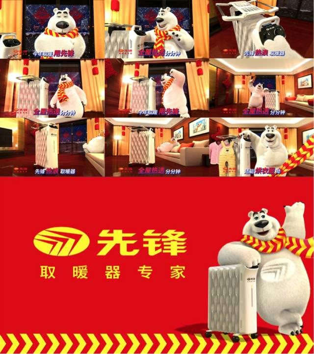
第一句，今年取暖用先锋。
取暖器有没有市场需求？必须有！即使在集中供暖的北方，也难保不提前降温啊，而在取暖基本靠抖的南方更不用说了，取暖对每个消费者而言，都是刚需。“今年取暖”直接带入主题和场景，一入冬，消费者必须要考虑“今年怎么取暖”？不仅如此，好广告能说一百年。哪年不用取暖？每年到了这个时候都要考虑取暖问题，再过一百年还是今年。每一年都是今年，现在一想到“今年取暖”问题，就能想到先锋，这就是广告的刺激反射原理。华与华广告片四项基本原则第三项——“让人行动，买！”麦克卢汉说，广告是无意识的药丸，“今年取暖用先锋”，是明确的购买指令，先下断言，让他把药吞下去。有了这一句，考虑添置取暖器的时候，他会想到先锋，这就为形成购买行为增加了可能性。第二句，全屋热透分分钟。
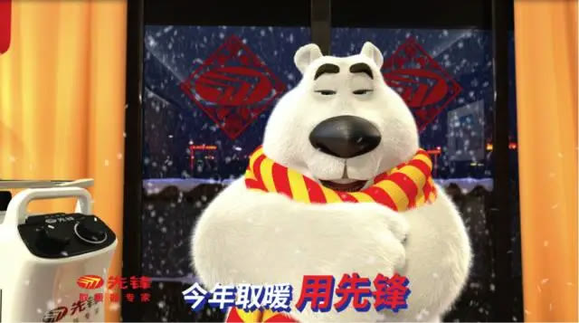
上一句是行动指令，这一句是购买理由，明确告诉你先锋取暖器的取暖效果好，全屋热透。说起“全屋热透”马上就能脑补出整个屋子里暖洋洋的感觉。华与华的广告语，要让消费者听了就能记住，马上就能说给其他人听的话语。“这雨把地下透了”，“华杉讲透论语”，大家本来就是这么说话的，“透”字一出，全屋都热了，这样的话语有原力，长着翅膀能飞到千家万户去。但是，光热还不够。我们在消费者调研的时候发现，很多消费者会问：用取暖器多久能热？原因大家都好理解，买个取暖器，必须要能尽快热呀，开了半天不暖和，买来干嘛？先锋取暖器，不仅是全屋热透，而且还是“全屋热透分分钟”，打开分分钟就热，你买不买？“全屋热透分分钟”就是华与华为先锋取暖器找到的购买理由。第三句，先锋热浪取暖器。
回到华与华广告片创作四项基本原则第一项，“让人记住你叫什么名字”。
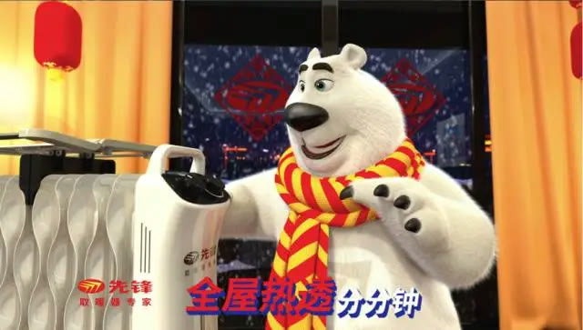

为什么要有这一项？做电视广告的最终目标是卖货，得让人去买这件产品，偌大的超市卖场，无限宽广的淘宝京东苏宁……各种商城，得让消费者记得你叫啥，方便他找到你。“不在乎天长地久，只在乎曾经拥有”的广告语传世多年，但是你去淘宝搜搜看，居然找不到任何和品牌、产品相关的信息。很多人都记住了这句话，却忘了这个品牌，多遗憾！
然而，我们的“先锋热浪取暖器”品牌和话语相结合，搜索时就就是直接搜到我们自己的产品，完美做到“我为自己代言，买我买我快买我！”
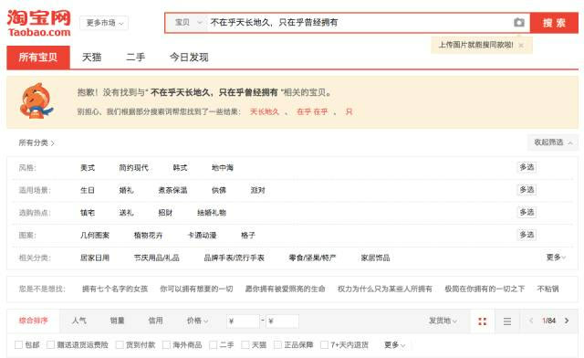
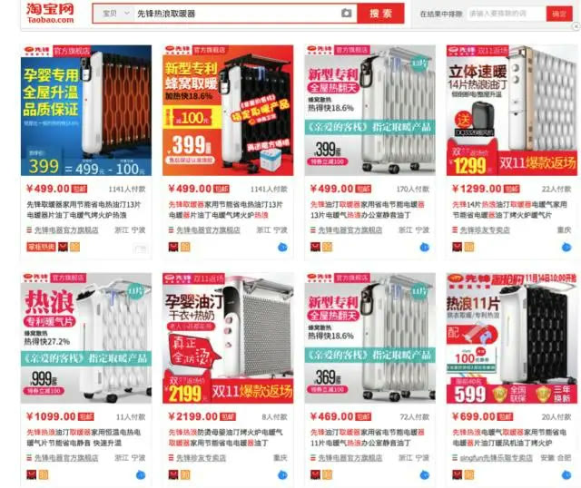
第四句，全屋热透分分钟。
宣传的本质是重复。购买理由，一定要重复重复再重复。为什么呢？没有永远忠于品牌的消费者，只有永远忠于消费者的品牌，话只说一遍，万一他没听清呢？万一他忘了呢？万一他恰好换台没看见呢？好的电视广告，不仅话语要重复，投放也要重复，反复播，年年播，让他想忘都忘不掉。说到这就不得不说脑白金那对常年在电视上跳舞的大爷大妈，跳了这么多年了，路上随便拦 10个人，大约有8个都能背的出来“今年过节不收礼，收礼只收脑白金”，还有2个没听过怎么办？这说明播的还不够，应该继续播。用“今年取暖用先锋”为消费者下了一个行动指令，用“全屋热透分分钟”提供了一个超级购买理由，用“先锋热浪取暖器”给出了明确的购买选项。又重复了超级购买理由之后， double ！重要的话说三遍！重要的话说三遍！！重要的话说三遍！！！三遍不够怎么办？整段重来一遍！！！！够了。第五六七八句，就有了。接下来看第九句。第九句，还能烘衣服哟，又一个新的购买理由。
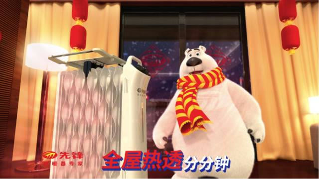
秋冬季节雨水多，衣服洗了晾在家里，一个星期都干不了。有宝宝的家庭更难过，一整盆的尿布怎么办？小宝宝难受，全家都难受。这时候你需要一台先锋热浪取暖器，不仅能取暖，还能烘衣服，妈妈再也不用担心我没衣服穿～买不买？买！创作电视广告片，和撩妹一样一样的，小钩子要一个一个下，撩的她心痒痒的，恨不得马上把产品搬回家。
戏字诀：广告就是耍把戏，好广告浑身都是戏
拆解完脚本，小编再为大家拆解画面。华与华为先锋创作了“先锋熊”的超级形象，作为一只怕冷的北极熊，先锋熊享受了取暖器的福利，责无旁贷的作为先锋品牌代言人发声。
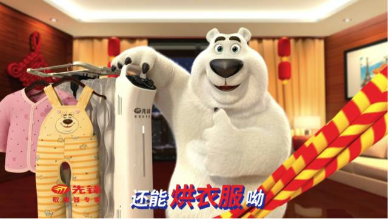
老戏骨先锋熊动作解析1：本熊抖一抖，观众跟着抖
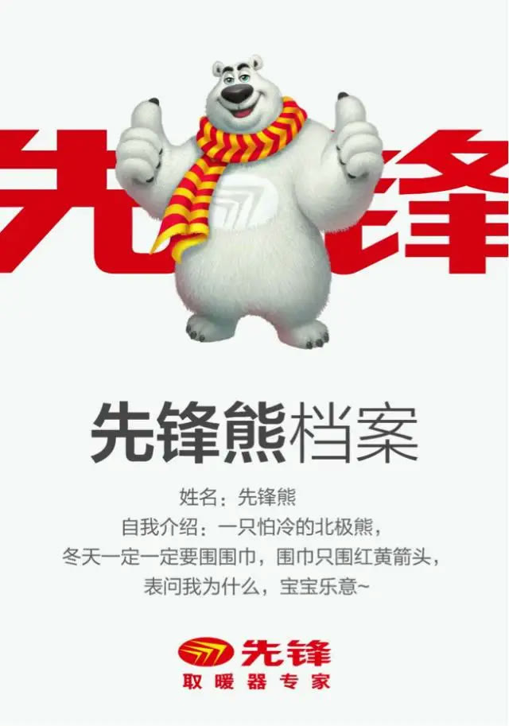
话说艺术来源于生活而高于生活，先锋熊的一举一动都寄生于百姓的生活场景中。风吹雪花往屋里飘，先锋熊关好玻璃门后转身直发抖的动作，是不是大家都遇到过？下雪、关窗、发抖，1个镜头就将冬天天冷的场景和感觉完美还原，刺激消费者的取暖需求，为先锋取暖器的出场做足铺垫，老艺术家的功力就在于，不着痕迹的让你把自己代入到广告场景中去。老戏骨先锋熊动作解析2:先锋一打开，热浪散出来
创作电视广告，需要时时刻刻去创造场景中的仪式感。回想所有的电影、电视和生活场景，求婚的时候为什么男生一定要深情款款，单膝下跪，手捧戒指，最好旁边还有蜡烛、玫瑰、放礼花？营造生活中的仪式感。可口可乐所有广告片，为什么一定会有代言人举起可乐，开怀畅饮的画面？营造广告中的仪式感。华与华在先锋取暖器广告片里为产品找到的仪式感场景，就是这厚厚的熊掌，轻轻的一开。
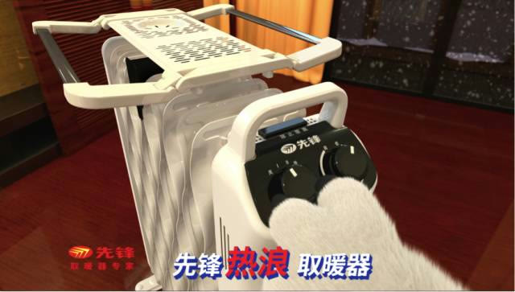
老戏骨先锋熊动作解析3:戏骨老不老，围巾甩得好
华与华为先锋提供了整套的超级符号体系创作，其中就包括红黄箭头超级战略花边。所有的事都是一件事，广告传播最终要落地，消费者在现场辨识品牌，红黄箭头具有强烈的视觉冲击力和辨识度。因此，在广告画面的设计上，设计了很多小把戏，让花边凸显出来。老戏骨先锋熊动作解析4:为热浪点赞，为先锋代言
点赞是一种态度，也是新生的具有原力的超级符号之一。配合“还能烘衣服哟”的广告文案，先锋熊竖起大拇指，为热浪取暖器点赞，又给消费者送上一颗无意识的药丸。老戏骨先锋熊的内心独白：
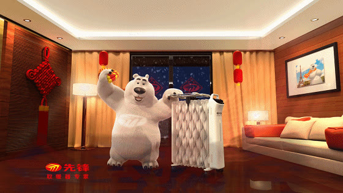

电视广告创作的最终目标是卖货。华与华广告片四项基本原则第二项：让人记住你长什么样子。先锋取暖器广告片从第2秒开始，产品全程出镜，多个产品特写画面，本戏骨浑身是戏但不抢戏。老戏骨先锋熊致谢工作人员：
感谢芒果TV，感谢MTV，感谢辛苦创作歌曲的工作人员，感谢超越极限15秒飙出61个字的超级Rap小能手本宝宝先锋熊，咳咳咳咳。为了解决语速过快可能带来的辨识问题，设计并后期制作了醒目的红蓝撞色字幕，辅助观众接收文案信息。到此，先锋取暖器广告片现已拆解完毕。
华与华广告片超级创意秘籍回顾
• 总纲：一个中心，四项基本原则
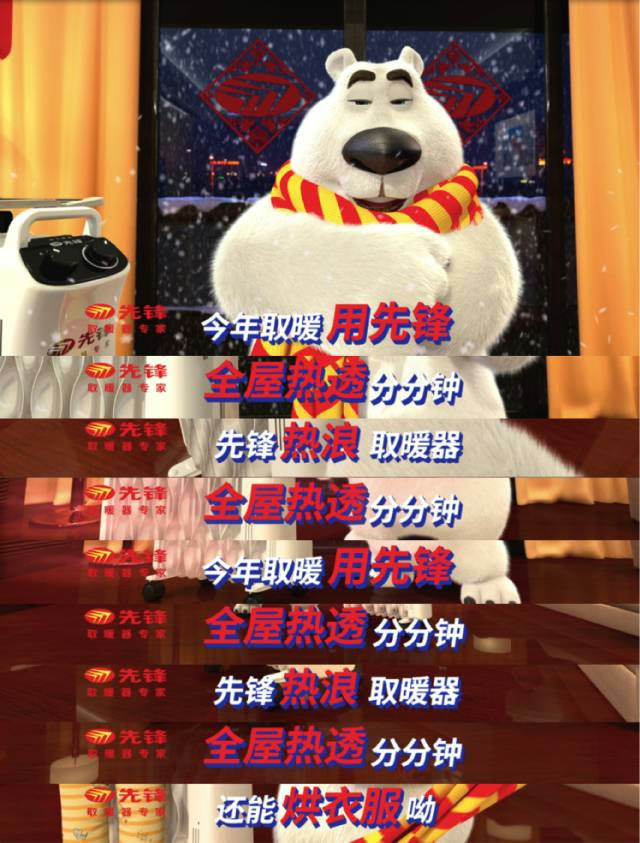
一个中心-电视广告创作，必须以卖货为最终目的。四项基本原则-（1）让人记住你叫什么名字。（2）让人记住你长什么样子。（3）让人行动，买！（4）建立品牌资产，为以后卖其他产品创建品牌平台。• 满字诀：物尽其用，话要说满15秒56个字，一定一定一定要用完！如果用不完，就把口号或品名多重复两遍，一定不要浪费！浪费就是犯罪！• 传字诀：创造一句话，让消费者替我们传传播的不是“传播”，是“播传”，要发动消费者替我们传播。• 磨字诀：好文案磨出来，能用一百年广告语创作的最高标准：一句广告语，能用一百年。宣传的本质是重复。购买理由，一定要重复重复再重复。创作电视广告片，和撩妹一样，小钩子一个一个下，撩的她恨不得马上把产品搬回家。• 戏字诀：广告就是耍把戏，好广告浑身都是戏寄生于观众的生活场景，让产品做主角，用各种道具和细节，竭尽全力把品牌传播价值最大化。华与华广告片超级创意秘籍，你学会了吗？